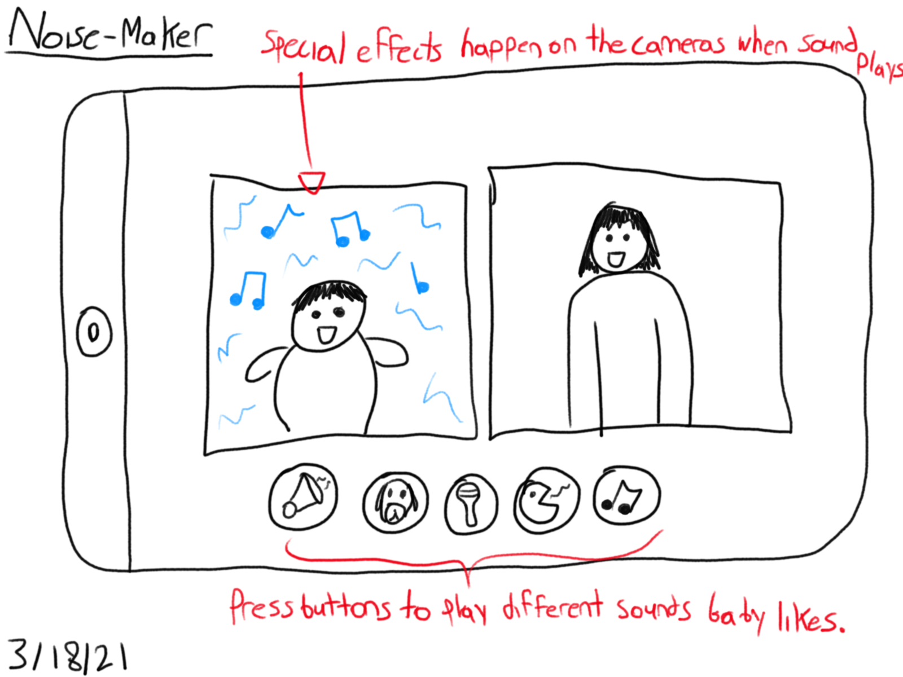

Hide and Seek
Ideation
For this project, the prompt was to create a website for a baby to video call with his grandparents that included interaction elements for both of them. I knew I wanted to do something that would be fun for both the baby and the grandparents. My original idea was to create an application where the grandparents could build structures that overlap their video, and then Rhys can knock them over by shaking or touching the screen. I got this idea after hearing that Rhys apparently likes knocking blocks over.

I really liked this idea, however, I realized that the scope might be too large when taking my personal HTML/JavaScript knowledge into account. So I decided to look over some of my other drawings and see if any truly piqued my interest.

I went back to a Hide and Seek Idea that I drew and felt that it striked the perfect balance between grandparent and baby usability, plus, it lets the baby move around and lets the application exist from outside the tablet. The original idea was for the grandparents to simply make noise on their side and it would hopefully draw the baby towards them. However I had another idea that I had drawn that could be combined with the hide and seek idea to make the application even more interactive.
If I combined the noise-maker idea with the hide and seek idea, then the grandparents could make noise from the application itself along with their own noise on their end in order to draw Rhys’ attention. I started sketching some more in-depth hide-and-seek sketches to get some ideas on how to set up the system. I drew a lot of ideas, some a little too ambitious for my current HTML/JavaScript skills. I tried to include as many of the ideas as possible, but in the end, I was only really able to fully implement a semi-remote system.
Results and Instructions
Here is the final result! One user connects as a Baby (ideally on a phone, but a tablet can work as well) and the other connects as an Adult (on any device). The mom of the baby then hides the device somewhere within the room that’s easy for the baby to access. The baby then has to find the device, the grandparents can make noise on their end or press the noise buttons to draw the baby’s attention. There are four noise buttons, all custom made to Rhys’ tastes, and a fifth button that vibrates the hidden device if it’s a cell phone.
Ideally, the mom might want to set up a third party video call so that the grandparents can watch the baby search for the device, since the hidden device will probably not have the best view in the world. In the future I would like to fix this issue by incorporating a three-screen system, as imagined by this sketch:

Sketches
Initial Sketches


Focused Sketches